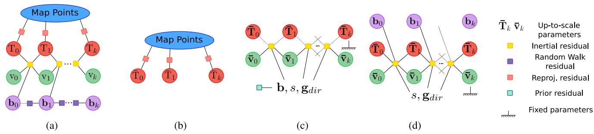
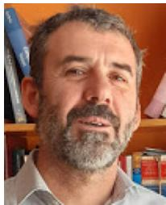
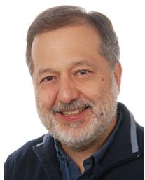

ORB-SLAM3: An Accurate Open-Source Library for Visual, Visual–Inertial, and Multimap SLAM
Carlos Campos , Richard Elvira , Juan J. Gómez Rodríguez , Graduate Student Member, IEEE, José M. M. Montiel , Member, IEEE, and Juan D. Tardós , Senior Member, IEEE
Abstract—This article presents ORB-SLAM3, the first system able to perform visual, visual-inertial and multimap SLAM with monocular, stereo and RGB-D cameras, using pin-hole and fisheye lens models. The first main novelty is a tightly integrated visualinertial SLAM system that fully relies on maximum a posteriori (MAP) estimation, even during IMU initialization, resulting in real-time robust operation in small and large, indoor and outdoor environments, being two to ten times more accurate than previous approaches. The second main novelty is a multiple map system relying on a new place recognition method with improved recall that lets ORB-SLAM3 survive to long periods of poor visual information: when it gets lost, it starts a new map that will be seamlessly merged with previous maps when revisiting them. Compared with visual odometry systems that only use information from the last few seconds, ORB-SLAM3 is the first system able to reuse in all the algorithm stages all previous information from high parallax co-visible keyframes, even if they are widely separated in time or come from previous mapping sessions, boosting accuracy. Our experiments show that, in all sensor configurations, ORB-SLAM3 is as robust as the best systems available in the literature and significantly more accurate. Notably, our stereo-inertial SLAM achieves an average accuracy of 3.5 cm in the EuRoC drone and 9 mm under quick hand-held motions in the room of TUM-VI dataset, representative of AR/VR scenarios. For the benefit of the community we make public the source code.
Index Terms—Computer vision, inertial navigation, simultaneous localization and mapping.
I. INTRODUCTION
NTENSE research on visual simultaneous localization and cameras either alone or in combination with inertial sensors, has produced, during the last two decades, excellent systems, with increasing accuracy and robustness. Modern systems rely on maximum a posteriori (MAP) estimation which, in the case of visual sensors, corresponds to bundle adjustment (BA), either geometric BA that minimizes feature reprojection error, in feature-based methods, or photometric BA that minimizes the photometric error of a set of selected pixels, in direct methods.
With the recent emergence of VO systems that integrate loop closing techniques, the frontier between VO and SLAM is more diffuse. The goal of visual SLAM is to use the sensors on-board a mobile agent to build a map of the environment and compute in real time the pose of the agent in that map. In contrast, VO systems put their focus on computing the agent’s ego-motion and not on building a map. The big advantage of a SLAM map is that it allows matching and using in BA previous observations performing three types of data association (extending the terminology used in [1]).
1) Short-term data association: matching map elements obtained during the last few seconds. This is the only data association type used by most VO systems, which forget environment elements once they get out of view, resulting in continuous estimation drift even when the system moves in the same area.
2) Mid-term data association: matching map elements that are close to the camera whose accumulated drift is still small. These can be matched and used in BA in the same way than short-term observations and allow to reach zero drift when the systems move in mapped areas. They are the key to the better accuracy obtained by our system compared against VO systems with loop detection.
3) Long-term data association: matching observations with elements in previously visited areas using a place recognition technique, regardless of the accumulated drift (loop detection), the current area being previously mapped in a disconnected map (map merging), or the tracking being lost (relocalization). Long-term matching allows to reset the drift and to correct the map using pose-graph (PG) optimization or, more accurately, using BA. This is the key to SLAM accuracy in medium and large loopy environments.
In this work, we build on ORB-SLAM [2], [3] and ORB-SLAM visual–inertial [4], the first visual and visual–inertial systems able to take full profit ofshort-term, mid-term, and longterm data association, reaching zero drift in mapped areas. Here, we go one step further providing multimap data association, which allows us to match and use in BA map elements coming from previous mapping sessions, achieving the true goal of a SLAM system: building a map that can be used later to provide accurate localization.
TABLE I
SUMMARY OF THE MOST REPRESENTATIVE VISUAL (TOP) AND VISUAL–INERTIAL (BOTTOM) SYSTEMS, IN CHRONOLOGICAL ORDER
| SAMOΛoT | Pixelspəsed | asccctionData | siation | Relccl-zaon | doopcosing | Muli Mps | Mno | Sterre0 | IUMn | Steo IeMmU | Fieye | Aeuacy | Rouns | Oopouurn ouce | |
| Mono-SLAM[13], [14] | SLAM | ShiTomasi | Correlation | EKF | ■ | – | √ | 1 | 1 | ■ | Fair | Fair | [15]1 | ||
| PTAM[16]-[18] | SLAM | FAST | PyramidSSD | BA | Thumbnail | – | √ | - | 1 | VeryGood | Fair | [19] | |||
| LSD-SLAM[20], [21] | SLAM | Edgelets | Direct | PG | FABMAPPG | ■ | √ | V | 1 | Good | Fair | [22] | |||
| SVO [23], [24] | VO | FAST+Hi.grad. | Direct | LocalBA | = | √ | √ | 1 | √ | VeryGood | VeryGood | [25]2 | |||
| ORB-SLAM2[2], [3] | SLAM | ORB | Descriptor | LocalBA | DBoW2 | DBoW2PG+BA | ■ | √ | √ | 1 | 1 | Exc. | VeryGood | [26] | |
| DSO [27]–[29] | VO | Highgrad. | Direct | LocalBA | – | √ | √ | √ | Fair | VeryGood | [30] | ||||
| DSM [31] | SLAM | Highgrad. | Direct | LocalBA | 1 | √ | - | 1 | VeryGood | VeryGood | [32] | ||||
| MSCKF[33]-[36] | VO | ShiTomasi | Crosscorrelation | EKF | – | √ | 一 | √ | √ | Fair | VeryGood | [37]3 | |||
| OKVIS[38], [39] | VO | BRISK | Descriptor | LocalBA | – | – | – | √ | √ | √ | Good | VeryGood | [40] | ||
| ROVIO[41], [42] | VO | ShiTomasi | Direct | EKF | – | – | – | √ | √ | √ | Good | VeryGood | [43] | ||
| ORBSLAM-VI[4] | SLAM | ORB | Descriptor | LocalBA | DBoW2 | DBoW2PG+BA | 一 | √ | - | √ | ■ | – | VeryGood | VeryGood | 1 |
| VINS-Fusion[7], [44] | VO | ShiTomasi | KLT | LocalBA | DBoW2 | DBoW2PG | √ | - | √ | √ | √ | √ | Good | Exc. | [45] |
| VI-DSO [46] | VO | Highgrad. | Direct | LocalBA | – | - | - | √ | 1 | – | VeryGood | Exc. | 1 | ||
| BASALT[47] | VO | FAST | KLT(LSSD) | LocalBA | ORBBA | – | – | – | – | √ | √ | VeryGood | Exc. | [48] | |
| Kimera [8] | VO | ShiTomasi | KLT | LocalBA | DBoW2PG | – | - | - | – | √ | - | Good | Exc. | [49] | |
| ORB-SLAM3(ours) | SLAM | ORB | Descriptor | LocalBA | DBoW2 | DBoW2PG+BA | V | √ | √ | √ | √ | √ | Exc. | Exc. | [5] |
1Last source code provided by a different author. Original software is available at [50].
2Source code available only for the first version, SVO 2.0 is not open source.
3MSCKF is patented [51], only a reimplementation by a different author is available as open source.
This is essentially a system paper, whose most important contribution is the ORB-SLAM3 library itself [5], the most complete and accurate visual, visual–inertial, and multimap SLAM system to date (see Table I). The main novelties of ORB-SLAM3 are as follows.
1) A monocular and stereo visual–inertial SLAM system that fully relies on MAP estimation, even during the inertial measurement unit (IMU) initialization phase. The initialization method proposed was previously presented in [6]. Here, we add its integration with ORB-SLAM visual–inertial [4], the extension to stereo-inertial SLAM, and a thorough evaluation in public datasets. Our results show that the monocular and stereo visual–inertial systems are extremely robust and significantly more accurate than other visual–inertial approaches, even in sequences without loops.
2) Improved-recall place recognition. Many recent visual SLAM and VO systems [2], [7], [8] solve place recognition using the DBoW2 bag of words library [9]. DBoW2 requires temporal consistency, matching three consecutive keyframes to the same area, before checking geometric consistency, boosting precision at the expense of recall. As a result, the system is too slow at closing loops and reusing previously mapped areas. We propose a novel place recognition algorithm, in which candidate keyframes are first checked for geometrical consistency, and then for local consistency with three covisible keyframes, which in most occasions are already in the map. This strategy increases recall and densifies data association improving map accuracy, at the expense of a slightly higher computational cost.
3) ORB-SLAM Atlas. The first complete multimap SLAM system able to handle visual and visual–inertial systems in monocular and stereo configurations. The Atlas can represent a set of disconnected maps and apply to them all the mapping operations smoothly: place recognition, camera relocalization, loop closure, and accurate seamless map merging. This allows to automatically use and combine maps built at different times, performing incremental multisession SLAM. A preliminary version of ORB-SLAM Atlas for visual sensors was presented in [10]. Here we add the new place recognition system, the visual–inertial multimap system, and its evaluation on public datasets.
4) An abstract camera representation making the SLAM code agnostic of the camera model used and allowing to add new models by providing their projection, unprojection, and Jacobian functions. We provide the implementations of pin-hole [11] and fisheye [12] models.
All these novelties, together with a few code improvements, make ORB-SLAM3 the new reference visual and visual–inertial open-source SLAM library, being as robust as the best systems available in the literature and significantly more accurate, as shown by our experimental results in Section VII. We also provide comparisons between monocular, stereo, monocularinertial, and stereo-inertial SLAM results that can be of interest for practitioners.
II. RELATED WORK
Table I presents a summary of the most representative visual and visual–inertial systems, showing the main techniques used for estimation and data association. The qualitative accuracy and robustness ratings included in the table are based on the results presented in Section VII and the comparison between parallel tracking and mapping (PTAM), large-scale direct monocular SLAM (LSD-SLAM), and ORB-SLAM reported in [2].
A. Visual SLAM
Monocular SLAM was first solved in MonoSLAM [13], [14], [52] using an extended Kalman filter (EKF) and Shi-Tomasi points that were tracked in subsequent images doing a guided search by correlation. Mid-term data association was significantly improved using techniques that guarantee that the feature matches used are consistent, achieving hand-held visual SLAM [53], [54].
In contrast, keyframe-based approaches estimate the map using only a few selected frames, discarding the information coming from intermediate frames. This allows to perform the more costly, but more accurate, BA optimization at keyframe rate. The most representative system was PTAM [16] that splits camera tracking and mapping into two parallel threads. Keyframe-based techniques are more accurate than filtering for the same computational cost [55], becoming the gold standard in visual SLAM and VO. Large-scale monocular SLAM was achieved in [56] using sliding-window BA and in [57] using a double-window optimization and a covisibility graph.
Building on these ideas, ORB-SLAM [2], [3] uses oriented fast and rotated brief (ORB) features, whose descriptor provides short-term and mid-term data association, builds a covisibility graph to limit the complexity of tracking and mapping, and performs loop closing and relocalization using the bag-of-words library DBoW2 [9], achieving long-term data association. To date, it is the only visual SLAM system integrating the three types of data association, which we believe is the key to its excellent accuracy. In this work, we improve its robustness in pure visual SLAM with the new Atlas system that starts a new map when tracking is lost and its accuracy in loopy scenarios with the new place recognition method with improved recall.
Direct methods do not extract features, but use directly the pixel intensities in the images, and estimate motion and structure by minimizing a photometric error. LSD-SLAM [20] was able to build large-scale semidense maps using high gradient pixels. However, map estimation was reduced to PG optimization, achieving lower accuracy than PTAM and ORB-SLAM [2]. The hybrid system semi-direct visual odometry (SVO) [23], [24] extracts FAST features, uses a direct method to track features and any pixel with nonzero intensity gradient from frame to frame, and optimizes camera trajectory and 3-D structure using reprojection error. SVO is extremely efficient, but, being a pure VO method, it only performs short-term data association, which limits its accuracy. Direct sparse odometry (DSO) [27] is able to compute accurate camera poses in situations where point detectors perform poorly, enhancing robustness in low textured areas or against blurred images. It introduces local photometric BA that simultaneously optimizes a window of seven recent keyframes and the inverse depth of the points. Extensions of this work include stereo [29], loop closing using features and DBoW2 [58], [59], and visual–inertial odometry [46]. Direct sparse mapping (DSM) [31] introduces the idea of map reusing in direct methods, showing the importance of mid-term data association. In all cases, the lack of integration of short-, mid-, and long-term data association results in lower accuracy than our proposal (see Section VII).
B. Visual–Inertial SLAM
The combination of visual and inertial sensors provides robustness to poor texture, motion blur, and occlusions and, in the case of monocular systems, makes scale observable.
Research in tightly coupled approaches can be traced back to multi-state constraint kalman filter (MSCKF) [33] where the EKF quadratic cost in the number of features is avoided by feature marginalization. The initial system was perfected in [34] and extended to stereo in [35] and [36]. The first tightly coupled VO system based on keyframes and BA was OKVIS [38], [39] which is also able to use monocular and stereo vision. While these systems rely on features, ROVIO [41], [42] feeds an EFK with photometric error using direct data association.
ORB-SLAM-VI [4] presented for the first time a visual– inertial SLAM system able to reuse a map with short-term, mid-term, and long-term data association, using them in an accurate local visual–inertial BA based on IMU preintegration [60], [61]. However, its IMU initialization technique was too slow, taking 15 s, which harmed robustness and accuracy. Faster initialization techniques were proposed in [62] and [63] based on a closed-form solution to jointly retrieve scale, gravity, accelerometer bias and initial velocity, as well as visual features depth. Crucially, they ignore IMU noise properties and minimize the 3-D error of points in space, and not their reprojection errors, that is the gold standard in feature-based computer vision. Our previous work [64] shows that this results in large unpredictable errors.
VINS-Mono [7] is a very accurate and robust monocularinertial odometry system with loop closing that uses DBoW2 and 4 degrees of freedom (DoF) PG optimization and map-merging.
Feature tracking is performed with Lucas–Kanade tracker, being slightly more robust than descriptor matching. In VINS-Fusion [44], it has been extended to stereo and stereo-inertial.
VI-DSO [46] extends DSO to visual–inertial odometry, proposing a BA that combines inertial observations with the photometric error of selected high gradient pixels, which renders very good accuracy. As the information from high gradient pixels is successfully exploited, the robustness in scene regions with poor texture is also boosted. Their initialization method relies on visual–inertial BA and takes 20–30 s to converge within 1% scale error.
The recent BASALT [47] is a stereo-inertial odometry system that extracts nonlinear factors from visual–inertial odometry to use them in BA and closes loops matching ORB features, achieving very good to excellent accuracy. Kimera [8] is a novel outstanding metric-semantic mapping system, but its metric part consists in stereo-inertial odometry plus loop closing with DBoW2 and PG optimization, achieving similar accuracy to VINS-Fusion.
In this work, we build on ORB-SLAM-VI and extend it to stereo-inertial SLAM. We propose a novel fast initialization method based on MAP estimation that properly takes into account visual and inertial sensor uncertainties and estimates the true scale with 5% error in 2 s, converging to 1% scale error in 15 s. All other systems discussed above are visual–inertial odometry methods, some of them extended with loop closing, and lack the capability of using mid-term data associations. We believe that this, together with our fast and precise initialization, is the key to the better accuracy consistently obtained by our system, even in sequences without loops.
C. Multimap SLAM
The idea of adding robustness to tracking losses during exploration by means of map creation and fusion was first proposed in [65] within a filtering approach. One of the first keyframebased multimap systems was [66], but the map initialization was manual and the system was not able to merge or relate the different submaps. Multimap capability has been researched as a component of collaborative mapping systems, with several mapping agents and a central server that only receives information [67] or with bidirectional information flow as in C2TAM [68]. MOARSLAM [69] proposed a robust stateless client-server architecture for collaborative multidevice SLAM, but the main focus was the software architecture and did not report accuracy results.
More recently, CCM-SLAM [70], [71] proposes a distributed multimap system for multiple drones with bidirectional information flow, built on top of ORB-SLAM. Their focus is on overcoming the challenges of limited bandwidth and distributed processing, while ours is on accuracy and robustness, achieving significantly better results on the EuRoC dataset. SLAM [72] also proposes a multimap extension of ORB-SLAM2 but keeps submaps as separated entities while we perform seamless map merging, building a more accurate global map.
VINS-Mono [7] is a VO system with loop closing and multimap capabilities that rely on the place recognition library

Fig. 1. Main system components of ORB-SLAM3.
DBoW2 [9]. Our experiments show that ORB-SLAM3 is 2.6 times more accurate than VINS-Mono in monocular-inertial single-session operation on the EuRoC dataset, thanks to the ability to use mid-term data association. Our Atlas system also builds on DBoW2 but proposes a novel higher recall place recognition technique and performs a more detailed and accurate map merging using local BA, increasing the advantage to 3.2 times better accuracy than VINS-Mono in multisession operation on EuRoC.
III. SYSTEM OVERVIEW
ORB-SLAM3 is built on ORB-SLAM2 [3] and ORB-SLAM-VI [4]. It is a full multimap and multisession system able to work in pure visual or visual–inertial modes with monocular, stereo, or RGB-D sensors, using pin-hole and fisheye camera models. Fig. 1 shows the main system components that are parallel to those of ORB-SLAM2 with some significant novelties, which are summarized next.
1) Atlas is a multimap representation composed of a set of disconnected maps. There is an active map where the tracking thread localizes the incoming frames and is continuously optimized and grown with new keyframes by the local mapping thread. We refer to the other maps in the Atlas as the nonactive maps. The system builds a unique DBoW2 database of keyframes that is used for relocalization, loop closing, and map merging.
2) Tracking thread processes sensor information and computes the pose of the current frame with respect to the active map in real time, minimizing the reprojection error of the matched map features. It also decides whether the current frame becomes a keyframe. In visual–inertial mode, the body velocity and IMU biases are estimated by including the inertial residuals in the optimization. When tracking is lost, the tracking thread tries to relocalize the current frame in all the Atlas’ maps. Ifrelocalized, tracking is resumed, switching the active map ifneeded. Otherwise, after a certain time, the active map is stored as nonactive, and a new active map is initialized from scratch.
3) Local mapping thread adds keyframes and points to the active map, removes the redundant ones, and refines the map using visual or visual–inertial BA, operating in a local window of keyframes close to the current frame. Additionally, in the inertial case, the IMU parameters are initialized and refined by the mapping thread using our novel MAP-estimation technique.
4) Loop and map merging thread detects common regions between the active map and the whole Atlas at keyframe rate. If the common area belongs to the active map, it performs loop correction; if it belongs to a different map, both maps are seamlessly merged into a single one, which becomes the active map. After a loop correction, a full BA is launched in an independent thread to further refine the map without affecting real-time performance.
IV. CAMERA MODEL
ORB-SLAM assumed in all system components a pin-hole camera model. Our goal is to abstract the camera model from the whole SLAM pipeline by extracting all properties and functions related to the camera model (projection and unprojection functions, Jacobian, etc.) into separate modules. This allows our system to use any camera model by providing the corresponding camera module. In ORB-SLAM3 library, apart from the pin-hole model, we provide the Kannala–Brandt [12] fisheye model.
As most popular computer vision algorithms assume a pinhole camera model, many SLAM systems rectify either the whole image or the feature coordinates to work in an ideal planar retina. However, this approach is problematic for fisheye lenses that can reach or surpass a field of view (FOV) of 180◦. Image rectification is not an option as objects in the periphery get enlarged and objects in the center lose resolution, hindering feature matching. Rectifying the feature coordinates requires using less than 180◦ FOV and causes trouble to many computer vision algorithms that assume uniform reprojection error along the image, which is far from true in rectified fisheye images. This forces to crop out the outer parts of the image, losing the advantages of large FOV: faster mapping of the environment and better robustness to occlusions. Next, we discuss how to overcome these difficulties.
A. Relocalization
A robust SLAM system needs the capability of relocalizing the camera when tracking fails. ORB-SLAM solves the relocalization problem by setting a perspective-n-points solver based on the ePnP algorithm [73], which assumes a calibrated pin-hole camera along all its formulation. To follow up with our approach, we need a PnP algorithm that works independently of the camera model used. For that reason, we have adopted maximum likelihood perspective-n-point algorithm [74] that is completely decoupled from the camera model as it uses projective rays as input. The camera model just needs to provide an unprojection function passing from pixels to projection rays, to be able to use relocalization.
B. Nonrectified Stereo SLAM
Most stereo SLAM systems assume that stereo frames are rectified, i.e., both images are transformed to pin-hole projections using the same focal length, with image planes coplanar, and are aligned with horizontal epipolar lines, such that a feature in one image can be easily matched by looking at the same row in the other image. However, the assumption of rectified stereo images is very restrictive and, in many applications, is neither suitable nor feasible. For example, rectifying a divergent stereo pair or a stereo fisheye camera would require severe image cropping, losing the advantages of a large FOV.
For that reason, our system does not rely on image rectification, considering the stereo rig as two monocular cameras having the following:
1) a constant relative SE(3) transformation between them;
2) optionally, a common image region that observes the same portion of the scene.
These constrains allow us to effectively estimate the scale of the map by introducing that information when triangulating new landmarks and in the BA optimization. Following up with this idea, our SLAM pipeline estimates a 6 DoF rigid body pose, whose reference system can be located in one of the cameras or in the IMU sensor, and represents the cameras with respect to the rigid body pose.
If both cameras have an overlapping area in which we have stereo observations, we can triangulate true scale landmarks the first time they are seen. The rest of both images still has a lot of relevant information that is used as monocular information in the SLAM pipeline. Features first seen in these areas are triangulated from multiple views, as in the monocular case.
V. VISUAL–INERTIAL SLAM
ORB-SLAM-VI [4] was the first true visual–inertial SLAM system capable of map reusing. However, it was limited to pin-hole monocular cameras, and its initialization was too slow, failing in some challenging scenarios. In this work, we build on ORB-SLAM-VI providing a fast and accurate IMU initialization technique and an open-source SLAM library capable of monocular-inertial and stereo-inertial SLAM, with pin-hole and fisheye cameras.
A. Fundamentals
While, in pure visual SLAM, the estimated state only includes the current camera pose, in visual–inertial SLAM, additional variables need to be computed. These are the body pose and velocity in the world frame, and the gyroscope and accelerometer biases, and , which are assumed to evolve according to a Brownian motion. This leads to the state vector

Fig. 2. Factor graph representation for different optimizations along the system.
For visual–inertial SLAM, we preintegrate IMU measurements between consecutive visual frames, i and , following the theory developed in [60] and formulated on manifolds in [61]. We obtain preintegrated rotation, velocity, and position measurements, denoted as , and , as well as a covariance matrix for the whole measurement vector. Given these preintegrated terms and states and we adopt the definition of inertial residual from [61]
where $\boldsymbol { \mathrm { \Omega } } \boldsymbol { \mathrm { \Omega } } \boldsymbol { \mathrm { \Omega } } \boldsymbol { \mathrm { \Omega } } \boldsymbol { \mathrm { \Omega } } \boldsymbol { \mathrm { \Omega } } \boldsymbol { \mathrm { \Omega } } \boldsymbol { \mathrm { \Omega } } \boldsymbol { \mathrm { \Omega } } \boldsymbol { \mathrm { \Omega } } \boldsymbol { \mathrm { \Omega } } \boldsymbol { \mathrm { \Omega } } \boldsymbol { \mathrm { \Omega } } \boldsymbol { \mathrm { \Omega } } \boldsymbol { \mathrm { \Omega } } \boldsymbol { \mathrm { \Omega } } \boldsymbol { \mathrm { \Omega } } \boldsymbol { \mathrm { \Omega } } \boldsymbol { \mathrm { \Omega } } \boldsymbol { \mathrm { \Omega } } \boldsymbol { \mathrm { \Omega } } \boldsymbol { \mathrm { \Omega } } \boldsymbol { \mathrm { \Omega } } \boldsymbol { \mathrm { \Omega } } \boldsymbol { \mathrm { \Omega } } \boldsymbol { \mathrm { \Omega } } \boldsymbol { \mathrm { \Omega } } \boldsymbol { \mathrm { \Omega } } \boldsymbol { \mathrm { \Omega } } \boldsymbol { \mathrm { \Omega } }\mathbf { r } _ { i j }\mathbf { x } _ { j }$
where is the projection function for the corresponding camera model, is the observation of point at image i, having a covariance matrix stands for the rigid transformation from body-IMU to camera (left or right), known from calibration, and ⊕ is the transformation operation of SE(3) group over elements.
Combining inertial and visual residual terms, visual–inertial SLAM can be posed as a keyframe-based minimization problem [39]. Given a set of keyframes and its state and a set of l 3-D points and its state , the visual–inertial optimization problem can be stated as follows:
where is the set of keyframes observing 3-D point This optimization may be outlined as the factor-graph shown in Fig. 2(a). Note that for reprojection error, we use a robust Huber kernel to reduce the influence of spurious matchings, while for inertial residuals, it is not needed since miss-associations do not exist. This optimization needs to be adapted for efficiency during tracking and mapping, but, more importantly, it requires good initial seeds to converge to accurate solutions.
B. IMU Initialization
The goal of this step is to obtain good initial values for the inertial variables: body velocities, gravity direction, and IMU biases. Some systems like VI-DSO [46] try to solve from scratch visual–inertial BA, sidestepping a specific initialization process, obtaining slow convergence for inertial parameters (up to 30 s). In this work, we propose a fast and accurate initialization method based on the following three key insights.
1) Pure monocular SLAM can provide very accurate initial maps [2], whose main problem is that scale is unknown. Solving first the vision-only problem will enhance IMU initialization.
2) As shown in [56], scale converges much faster when it is explicitly represented as an optimization variable, instead of using the implicit representation of BA.
3) Ignoring sensor uncertainties during IMU initialization produces large unpredictable errors [64].
So, taking properly into account sensor uncertainties, we state the IMU initialization as a MAP estimation problem, split into the following three steps.
1) Vision-Only MAP Estimation: We initialize pure monocular SLAM [2] and run it during 2 s, inserting keyframes at 4 Hz. After this period, we have an up-toscale map composed of camera poses and hundreds of points, which is optimized using visual-only BA [Fig. 2(b)]. These poses are transformed to body reference, obtaining the trajectory where the bar denotes up-to-scale variables in the monocular case.
2) Inertial-Only MAP Estimation: In this step, we aim to obtain the optimal estimation of the inertial variables, in the sense of MAP estimation, using only and inertial measurements between these keyframes. These inertial variables may be stacked in the inertial-only state vector
where is the scale factor of the vision-only solution; is a rotation matrix used to compute gravity vector g in the world reference as where and G is the gravity magnitude; are the accelerometer and gyroscope biases assumed to be constant during initialization; and is the up-to-scale body velocities from first to last keyframe, initially estimated from . At this point, we are only considering the set of inertial measurements . Thus, we can state an MAP estimation problem, where the posterior distribution to be maximized is
where stands for likelihood and for prior. Considering independence of measurements, the inertial-only MAP estimation problem can be written as
Taking negative logarithm and assuming Gaussian error for IMU preintegration and prior distribution, this finally results in the optimization problem
This optimization, represented in Fig. 2(c), differs from (4) in not including visual residuals, as the up-to-scale trajectory estimated by visual SLAM is taken as constant, and adding a prior residual that forces IMU biases to be close to zero. Covariance matrix represents prior knowledge about the range of values IMU biases may take. Details for preintegration of IMU covariance can be found at [61].
As we are optimizing in a manifold, we need to define a retraction [61] to update during the optimization. Since rotation around gravity direction does not suppose a change in gravity, this update is parameterized with two angles
with Exp(.) being the exponential map from to SO(3). To guarantee that scale factor remains positive during optimization, we define its update as
Once the inertial-only optimization is finished, the frame poses and velocities and the 3-D map points are scaled with the estimated scale factor and rotated to align the z-axis with the estimated gravity direction. Biases are updated and IMU preintegration is repeated, aiming to reduce future linearization errors.
3) Visual–Inertial MAP Estimation: Once we have a good estimation for inertial and visual parameters, we can perform a joint visual–inertial optimization for further refining the solution. This optimization may be represented as Fig. 2(a) but having common biases for all keyframes and including the same prior information for biases than in the inertial-only step.
Our exhaustive initialization experiments on the EuRoC dataset [6] show that this initialization is very efficient, achieving 5% scale error with trajectories of 2 s. To improve the initial estimation, visual–inertial BA is performed 5 and 15 s after initialization, converging to 1% scale error as shown in
Section VII. After these BAs, we say that the map is mature, meaning that scale, IMU parameters, and gravity directions are already accurately estimated.
Our initialization is much more accurate than joint initialization methods that solve a set ofalgebraic equations [62]–[64] and much faster than the initialization used in ORB-SLAM-VI [4] that needed 15 s to get the first scale estimation or that used in VI-DSO [46] that starts with a huge scale error and requires 20–30 s to converge to 1% error. Comparisons between different initialization methods may be found at [6].
In some specific cases, when slow motion does not provide good observability of the inertial parameters, initialization may fail to converge to accurate solutions in just 15 s. To get robustness against this situation, we propose a novel scale refinement technique based on a modified inertial-only optimization, where all inserted keyframes are included, but scale and gravity directions are the only parameters to be estimated [Fig. 2(d)]. Note that, in that case, the assumption of constant biases would not be correct. Instead, we use the values estimated from mapping, and we fix them. This optimization, which is very computationally efficient, is performed in the local mapping thread every 10 s until the map has more than 100 keyframes or more than 75 s have passed since initialization.
Finally, we have easily extended our monocular-inertial initialization to stereo-inertial by fixing the scale factor to one and taking it out from the inertial-only optimization variables, enhancing its convergence.
C. Tracking and Mapping
For tracking and mapping, we adopt the schemes proposed in [4]. Tracking solves a simplified visual–inertial optimization where only the states of the last two frames are optimized, while map points remain fixed.
For mapping, trying to solve the whole optimization from (4) would be intractable for large maps. We use as optimizable variables a sliding window of keyframes and their points, including also observations to these points from covisible keyframes but keeping their pose fixed.
D. Robustness to Tracking Loss
In pure visual SLAM or VO systems, temporal camera occlusion and fast motions result in losing track of visual elements, getting the system lost. ORB-SLAM pioneered the use of fast relocalization techniques based on bag-of-words place recognition, but they proved insufficient to solve difficult sequences in the EuRoC dataset [3]. Our visual–inertial system enters into visually lost state when less than 15 point maps are tracked and achieves robustness in the following two stages:
1) Short-term lost: The current body state is estimated from IMU readings, and map points are projected in the estimated camera pose and searched for matches within a large image window. The resulting matches are included in visual–inertial optimization. In most cases, this allows to recover visual tracking. Otherwise, after 5 s, we pass to the next stage.
2) Long-term lost: A new visual–inertial map is initialized as explained above, and it becomes the active map.
If the system gets lost within 15 s after IMU initialization, the map is discarded. This prevents to accumulate inaccurate and meaningless maps.
VI. MAP MERGING AND LOOP CLOSING
Short-term and mid-term data associations between a frame and the active map are routinely found by the tracking and mapping threads by projecting map points into the estimated camera pose and searching for matches in an image window of just a few pixels. To achieve long-term data association for relocalization and loop detection, ORB-SLAM uses the DBoW2 bag-of-words place recognition system [9], [75]. This method has been also adopted by most recent VO and SLAM systems that implement loop closures (Table I).
Unlike tracking, place recognition does not start from an initial guess for camera pose. Instead, DBoW2 builds a database of keyframes with their bag-of-words vectors and, given a query image, is able to efficiently provide the most similar keyframes according to their bag-of-words. Using only the first candidate, raw DBoW2 queries achieve precision and recall in the order of 50%–80% [9]. To avoid false positives that would corrupt the map, DBoW2 implements temporal and geometric consistency checks, moving the working point to 100% precision and 30%– 40% recall [9], [75]. Crucially, the temporal consistency check delays place recognition at least during three keyframes. When trying to use it in our Atlas system, we found that this delay and the low recall resulted too often in duplicated areas in the same or in different maps.
In this work, we propose a new place recognition algorithm with improved recall for long-term and multimap data association. Whenever the mapping thread creates a new keyframe, place recognition is launched trying to detect matches with any of the keyframes already in the Atlas. If the matching keyframe found belongs to the active map, a loop closure is performed. Otherwise, it is a multimap data association, and then the active and the matching maps are merged. As a second novelty in our approach, once the relative pose between the new keyframe and the matching map is estimated, we define a local window with the matching keyframe and its neighbors in the covisibility graph. In this window, we intensively search for mid-term data associations, improving the accuracy of loop closing and map merging. These two novelties explain the better accuracy obtained by ORB-SLAM3 compared with ORB-SLAM2 in the EuRoC experiments. The details of the different operations are explained next.
A. Place Recognition
To achieve higher recall, for every new active keyframe, we query the DBoW2 database for several similar keyframes in the Atlas. To achieve 100% precision, each of these candidates goes through several steps of geometric verification. The elementary operation of all the geometrical verification steps consists in checking whether there is an ORB keypoint inside an image window whose descriptor matches the ORB descriptor of a map point, using a threshold for the Hamming distance between them. If there are several candidates in the search window, to discard ambiguous matches, we check the distance ratio to the secondclosest match [76]. The steps of our place recognition algorithm are as follows.
1) DBoW2 candidate keyframes. We query the Atlas DBoW2 database with the active keyframe to retrieve the three most similar keyframes, excluding keyframes covisible with . We refer to each matching candidate for place recognition as
2) Local window. For each , we define a local window that includes , its best covisible keyframes, and the map points observed by all of them. The DBoW2 direct index provides a set ofputative matches between keypoints in and in the local window keyframes. For each of these 2-D–2-D matches, we have also the 3-D–3-D match available between their corresponding map points.
3) 3-D aligning transformation. We compute using RANSAC the transformation that better aligns the map points in local window with those of . In pure monocular, or in monocular-inertial when the map is still not mature, we compute ; otherwise, . In both cases, we use Horn algorithm [77] using a minimal set of three 3-D–3-D matches to find each hypothesis for . The putative matches that, after transforming the map point in by , achieve a reprojection error in below a threshold give a positive vote to the hypothesis. The hypothesis with more votes is selected, provided the number is over a threshold.
4) Guided matching refinement. All the map points in the local window are transformed with to find more matches with the keypoints in . The search is also reversed, finding matches for map points in all the keyframes of the local window. Using all the matchings found, is refined by nonlinear optimization, where the goal function is the bidirectional reprojection error, using Huber influence function to provide robustness to spurious matches. If the number of inliers after the optimization is over a threshold, a second iteration of guided matching and nonlinear refinement is launched, using a smaller image search window.
5) Verification in three covisible keyframes. To avoid false positives, DBoW2 waited for place recognition to fire in three consecutive keyframes, delaying or missing place recognition. Our crucial insight is that, most of the time, the information required for verification is already in the map. To verify place recognition, we search in the active part ofthe map two keyframes covisible with where the number of matches with points in the local window is over a threshold. If they are not found, the validation is further tried with the new incoming keyframes, without requiring the bag-of-words to fire again. The validation continues until three keyframes verify or two consecutive new keyframes fail to verify it.
6) VI gravity direction verification. In the visual–inertial case, if the active map is mature, we have estimated . We further check whether the pitch and roll angles are below a threshold to definitively accept the place recognition hypothesis.
B. Visual Map Merging
When a successful place recognition produces multimap data association between keyframe in the active map , and a matching keyframe from a different map stored in the Atlas , with an aligning transformation , we launch a map merging operation. In the process, special care must be taken to ensure that the information in can be promptly reused by the tracking thread to avoid map duplication. For this, we propose to bring the map into reference. As may contain many elements and merging them might take a long time, merging is split into two steps. First, the merge is performed in a welding window defined by the neighbors of and in the covisibility graph, and in a second stage, the correction is propagated to the rest of the merged map by a PG optimization. The detailed steps of the merging algorithm are as follows.
1) Welding window assembly. The welding window includes and its covisible keyframes, and its covisible keyframes, and all the map points observed by them. Before their inclusion in the welding window, the keyframes and map points belonging to are transformed by to align them with respect to
2) Merging maps. Maps and are fused together to become the new active map. To remove duplicated points, matches are actively searched for points in the keyframes. For each match, the point from is removed, and the point in is kept accumulating all the observations ofthe removed point. The covisibility and essential graphs [2] are updated by the addition of edges connecting keyframes from and , thanks to the new mid-term point associations found.
3) Welding bundle adjustment. A local BA is performed optimizing all the keyframes from and in the welding window along with the map points which are observed by them [Fig. 3(a)]. To fix gauge freedom, the keyframes of not belonging to the welding window but observing any of the local map points are included in the BA with their poses fixed. Once the optimization finishes, all the keyframes included in the welding area can be used for camera tracking, achieving fast and accurate reuse of map
4) Essential-graph optimization. A PG optimization is performed using the essential graph of the whole merged map, keeping fixed the keyframes in the welding area. This optimization propagates corrections from the welding window to the rest of the map.
C. Visual–Inertial Map Merging
The visual–inertial merging algorithm follows similar steps than the pure visual case. Steps 1) and 3) are modified to better exploit the inertial information.
1) VI welding window assembly: If the active map is mature, we apply the available to map before its inclusion in the welding window. If the active map is not mature, we align using the available

Fig. 3. Factor graph representation for the welding BA, with reprojection error terms (blue squares), IMU preintegration terms (yellow squares), and bias random walk (purple squares). (a) Visual welding BA. (b) Visual-Inertial welding BA.
2) VI welding bundle adjustment: Poses, velocities, and biases of keyframes and and their five last temporal keyframes are included as optimizable. These variables are related by IMU preintegration terms, as shown in Fig. 3(b). For , the keyframe immediately before the local window is included but fixed, while, for the similar keyframe is included, but its pose remains optimizable. All map points seen by the above-mentioned keyframes are optimized, together with poses from and covisible keyframes. All keyframes and points are related by means of reprojection error.
D. Loop Closing
Loop closing correction algorithm is analogous to map merging but in a situation where both keyframes matched by place recognition belong to the active map. A welding window is assembled from the matched keyframes, and point duplicates are detected and fused creating new links in the covisibility and essential graphs. The next step is a PG optimization to propagate the loop correction to the rest ofthe map. The final step is a global BA to find the MAP estimate after considering the loop closure mid-term and long-term matches. In the visual–inertial case, the global BA is only performed if the number of keyframes is below a threshold to avoid a huge computational cost.
TABLE II
PERFORMANCE COMPARISON IN THE EUROC DATASET (RMS ATE IN M., SCALE ERROR IN %). EXCEPT WHERE NOTED, WE SHOW RESULTS REPORTED BY THE AUTHORS OF EACH SYSTEM, FOR ALL THE FRAMES IN THE TRAJECTORY, COMPARING WITH THE PROCESSED GT
| MH01 | MH02 | MH03 | MH04 | MH05 | V101 | V102 | V103 | V201 | V202 | V203 | Avg1 | |||
| Monocular | ORB-SLAM [4] | 0.071 | 0.067 | 0.071 | 0.082 | 0.060 | 0.015 | 0.020 | - | 0.021 | 0.018 | – | 0.047* | |
| DSO [27] | ATE | 0.046 | 0.046 | 0.172 | 3.810 | 0.110 | 0.089 | 0.107 | 0.903 | 0.044 | 0.132 | 1.152 | 0.601 | |
| SVO [24] | ATE | 0.100 | 0.120 | 0.410 | 0.430 | 0.300 | 0.070 | 0.210 | - | 0.110 | 0.110 | 1.080 | 0.294* | |
| DSM [31] | ATE | 0.039 | 0.036 | 0.055 | 0.057 | 0.067 | 0.095 | 0.059 | 0.076 | 0.056 | 0.057 | 0.784 | 0.126 | |
| ORB-SLAM3 (ours) | ATE | 0.016 | 0.027 | 0.028 | 0.138 | 0.072 | 0.033 | 0.015 | 0.033 | 0.023 | 0.029 | 0.041* | ||
| Stereo | ORB-SLAM2 [3] | ATE | 0.035 | 0.018 | 0.028 | 0.119 | 0.060 | 0.035 | 0.020 | 0.048 | 0.037 | 0.035 | 0.044* | |
| VINS-Fusion [44] | ATE | 0.540 | 0.460 | 0.330 | 0.780 | 0.500 | 0.550 | 0.230 | - | 0.230 | 0.200 | ■ | 0.424* | |
| SVO [24] | ATE | 0.040 | 0.070 | 0.270 | 0.170 | 0.120 | 0.040 | 0.040 | 0.070 | 0.050 | 0.090 | 0.790 | 0.159 | |
| ORB-SLAM3 (ours) | ATE | 0.029 | 0.019 | 0.024 | 0.085 | 0.052 | 0.035 | 0.025 | 0.061 | 0.041 | 0.028 | 0.521 | 0.084 | |
| MCSKF [33] | ATE5 | 0.420 | 0.450 | 0.230 | 0.370 | 0.480 | 0.340 | 0.200 | 0.670 | 0.100 | 0.160 | 1.130 | 0.414 | |
| Monocular Inertial | OKVIS [39] | ATE5 | 0.160 | 0.220 | 0.240 | 0.340 | 0.470 | 0.090 | 0.200 | 0.240 | 0.130 | 0.160 | 0.290 | 0.231 |
| ROVIO [42] | ATE5 | 0.210 | 0.250 | 0.250 | 0.490 | 0.520 | 0.100 | 0.100 | 0.140 | 0.120 | 0.140 | 0.140 | 0.224 | |
| ORBSLAM-VI | ATE2,3 | 0.075 | 0.084 | 0.087 | 0.217 | 0.082 | 0.027 | 0.028 | ■ | 0.032 | 0.041 | 0.074 | 0.075* | |
| [4] VINS-Mono | scale error2,3 | 0.5 | 0.8 | 1.5 | 3.5 | 0.5 | 0.9 | 0.8 | - | 0.2 | 1.4 | 0.7 | 1.1* | |
| [7] VI-DSO | ATE⁴ ATE | 0.084 0.062 | 0.105 0.044 | 0.074 0.117 | 0.122 0.132 | 0.147 0.121 | 0.047 0.059 | 0.066 0.067 | 0.180 0.096 | 0.056 0.040 | 0.090 0.062 | 0.244 0.174 | 0.110 | |
| [46] ORB-SLAM3 | scale error | 1.1 | 0.5 0.037 | 0.4 0.046 | 0.2 0.075 | 0.8 | 1.1 | 1.1 | 0.8 | 1.2 | 0.3 | 0.4 | 0.089 0.7 | |
| (ours) | ATE scale error | 0.062 1.4 | 0.3 | 0.8 | 0.5 | 0.057 0.3 | 0.049 2.0 | 0.015 0.6 | 0.037 2.2 | 0.042 0.7 | 0.021 0.4 | 0.027 1.0 | 0.043 0.9 | |
| Stereo Inertial | VINS-Fusion [44] | ATE4 | 0.166 | 0.152 | 0.125 | 0.280 | 0.284 | 0.076 | 0.069 | 0.114 | 0.066 | 0.091 | 0.096 | 0.138 |
| BASALT [47] | ATE3 | 0.080 | 0.060 | 0.050 | 0.100 | 0.080 | 0.040 | 0.020 | 0.030 | 0.030 | 0.020 | – | 0.051* | |
| Kimera [8] | ATE | 0.080 | 0.090 | 0.110 | 0.150 | 0.240 | 0.050 | 0.110 | 0.120 | 0.070 | 0.100 | 0.190 | 0.119 | |
| ORB-SLAM3 (ours) | ATE | 0.036 | 0.033 0.2 | 0.035 0.6 | 0.051 0.2 | 0.082 0.9 | 0.038 0.8 | 0.014 0.6 | 0.024 0.8 | 0.032 1.1 | 0.014 0.2 | 0.024 0.2 | 0.035 | |
| scale error | 0.6 | 0.6 | ||||||||||||
1Average error of the successful sequences. Systems that did not complete all sequences are denoted by * and are not marked in bold.
2Errors reported with raw GT instead of processed GT.
3Errors reported with keyframe trajectory instead of full trajectory.
4Errors obtained by ourselves, running the code with its default configuration.
5Errors reported at [78].
VII. EXPERIMENTAL RESULTS
The evaluation of the whole system is split into the following.
1) Single session experiments in EuRoC [79]: Each of the 11 sequences is processed to produce a map, with the four sensor configurations: monocular, monocular–inertial, stereo, and stereo–inertial.
2) Performance of monocular and stereo visual–inertial SLAM with fisheye cameras, in the challenging TUM-VI benchmark [80].
3) Multisession experiments in both datasets.
As usual in the field, we measure accuracy with rms ATE [81], aligning the estimated trajectory with ground-truth using a Sim(3) transformation in the pure monocular case, and an SE(3) transformation in the rest of sensor configurations. Scale error is computed using s from Sim(3) alignment, as |1 − s|. All experiments have been run on an Intel Core i7-7700 CPU, at 3.6 GHz, with 32 GB memory, using only CPU.
A. Single-Session SLAM on EuRoC
Table II compares the performance of ORB-SLAM3 using its four sensor configurations with the most relevant systems in the state of the art. Our reported values are the median after 10 executions. As shown in the table, ORB-SLAM3 achieves in all sensor configurations more accurate result than the best systems available in the literature, in most cases by a wide margin.
In monocular and stereo configurations, our system is more precise than ORB-SLAM2 due to the better place recognition algorithm that closes loops earlier and provides more mid-term matches. Interestingly, the next best results are obtained by DSM that also uses mid-term matches, even though it does not close loops.
In monocular-inertial configuration, ORB-SLAM3 is five to ten times more accurate than MCSKF, OKVIS, and ROVIO and more than double the accuracy of VI-DSO and VINS-Mono, showing again the advantages of mid-term and long-term data associations. Compared with ORB-SLAM VI, our novel fast IMU initialization allows ORB-SLAM3 to calibrate the inertial sensor in a few seconds and uses it from the very beginning, being able to complete all EuRoC sequences, obtaining better accuracy.

Fig. 4. Colored squares represent the rms ATE for ten different executions in each sequence of the EuRoC dataset.
In stereo-inertial configuration, ORB-SLAM3 is three to four times more accurate than Kimera and VINS-Fusion. Its accuracy is only approached by the recent BASALT that, being a native stereo-inertial system, was not able to complete sequence V203, where some frames from one of the cameras are missing. Comparing our monocular-inertial and stereo-inertial systems, the latter performs better in most cases. Only for two Machine Hall (MH) sequences, a lower accuracy is obtained. We hypothesize that greater depth scene for MH sequences may lead to less accurate stereo triangulation and, hence, a less precise scale.
To summarize performance, we have presented the median of ten executions for each sensor configuration. For a robust system, the median represents accurately the behavior of the system. But a nonrobust system will show high variance in its results. This can be analyzed using Fig. 4 that shows with colors the error obtained in each of the ten executions. Comparison with the figures for DSO, ROVIO, and VI-DSO published in [46] confirms the superiority of our method.
In pure visual configurations, the multimap system adds some robustness to fast motions by creating a new map when tracking is lost, which is merged later with the global map. This can be seen in sequences V103 monocular and V203 stereo that could not be solved by ORB-SLAM2 and are successfully solved by our system in most executions. As expected, stereo is more robust than monocular, thanks to its faster feature initialization, with the additional advantage that the real scale is estimated.
However, the big leap in robustness is obtained by our novel visual–inertial SLAM system, both in monocular and stereo configurations. The stereo-inertial system has a very slight advantage over monocular-inertial, particularly in the most challenging V203 sequence.
We can conclude that inertial integration not only boosts accuracy, reducing the median ATE error compared to pure visual solutions, but it also endows the system with excellent robustness, having a much more stable performance.
TABLE III
TUM-VI BENCHMARK [80]: RMS ATE (M) FOR REGIONS WITH AVAILABLE GROUND-TRUTH DATA
| Seq. | Mono-Inertial | Stereo-Inertial | Length(m) | LC | ||||
| VINS-Mono | ORB-SLAM3 | OKVIS | ROVIO | BASALT | ORB-SLAM3 | |||
| corridor1corridor2corridor3corridor4corridor5 | 0.630.951.560.250.77 | 0.040.020.310.170.03 | 0.330.470.570.260.39 | 0.470.750.850.132.09 | 0.340.420.350.210.37 | 0.030.020.020.210.01 | 305322300114270 | √√√√ |
| magistrale1magistrale2magistrale3magistrale4magistrale5magistrale6 | 2.193.110.405.120.852.29 | 0.560.524.890.131.031.30 | 3.49 | 4.5213.4314.8039.733.47X | 1.201.110.741.580.603.23 | 0.240.521.860.161.130.97 | 918561566688458771 | √√√√ |
| 2.731.220.771.623.91 | ||||||||
| outdoors1outdoors2outdoors3outdoors4outdoors5outdoors6outdoors7outdoors8 | 74.96133.4636.9916.46130.63133.6021.9083.36 | 70.7914.9839.63*25.2614.8716.847.5927.88 | X73.8632.3819.5113.1296.5113.6116.31 | 101.9521.6726.10X54.32149.1449.0136.03 | 255.0464.6138.2617.537.8965.504.0713.53 | 32.2310.4254.7711.618.9510.704.5811.02 | 265616011531928116820451748986 | √√ |
| room1room2room3room4room5room6 | 0.07 | 0.01 | 0.06 | 0.16 | 0.09 | 0.01 | ||
| 0.070.110.040.200.08 | 0.020.040.010.020.01 | 0.110.070.030.070.04 | 0.330.150.090.120.05 | 0.070.130.050.130.02 | 0.010.010.010.010.01 | |||
| 1461421356813167 | √√√√√√ | |||||||
| slides1 | 0.68 | 0.97 | 0.86 | 13.73 | 0.320.320.89 | 0.410.490.47 | 289299383 | |
| slides2slides3 | 0.840.69 | 1.06 | 2.152.58 | 0.814.68 | ||||
| 0.69 | ||||||||
Ours are median of three executions.
For other systems, we provide values reported at [82].
*points out that one out of three runs has not been successful.
LC: Loop closing may exist in that sequence.
TABLE IV
RMS ATE (M) OBTAINED BY ORB-SLAM3 WITH FOUR SENSOR CONFIGURATIONS IN THE ROOM SEQUENCES, REPRESENTATIVE OF AR/VR SCENARIOS (MEDIAN OF THREE EXECUTIONS)
| Seq. | Mono | Stereo | Mono-Inertial | Stereo-Inertial |
| room1room2room3room4 | 0.042 | 0.077 | 0.009 | 0.008 |
| 0.026 | 0.055 | 0.018 | 0.012 | |
| 0.028 | 0.076 | 0.008 | 0.011 | |
| 0.046 | 0.071 | 0.009 | 0.008 | |
| room5 | 0.046 | 0.066 | 0.014 | 0.010 |
| room6 | 0.043 | 0.063 | 0.006 | 0.006 |
| Avg. | 0.039 | 0.068 | 0.011 | 0.009 |
TABLE V
MULTISESSION RMS ATE (M) ON THE EUROC DATASET. FOR CCM-SLAM AND VINS, WE SHOW RESULTS REPORTED BY THE AUTHORS OF EACH SYSTEM. OUR VALUES ARE THE MEDIAN OF FIVE EXECUTIONS, ALIGNING THE TRAJECTORIES WITH THE PROCESSED GT
| Room | Machine Hall | Vicon 1 | Vicon 2 | |
| Sequences | MH01-03 | MH01-05 | V101-103 | V201-203 |
| ORB-SLAM3ATEMono | 0.030 | 0.058 | 0.058 | 0.284 |
| CCM-SLAMATEMono [71] | 0.077 | I | I | = |
| ORB-SLAM3ATEStereo | 0.028 | 0.040 | 0.027 | 0.163 |
| ORB-SLAM3 ATEMono-Inertial Scale error | 0.0370.4 | 0.0650.3 | 0.0401.4 | 0.0480.9 |
| VINS [7]ATEMono-Inertial | 1 | 0.210 | 一 | 一 |
| ORB-SLAM3 ATEStereo-InertialScale error | 0.0410.6 | 0.0470.3 | 0.0310.6 | 0.0460.8 |

Fig. 5. Multisession stereo-inertial result with several sequences from TUM-VI dataset (front, side, and top views).

Fig. 6. Multisession stereo-inertial. In red, the trajectory estimated after singlesession processing of outdoors1. In blue, multisession processing of magistrale2 first and then outdoors1.
B. Visual–Inertial SLAM on TUM-VI Benchmark
The TUM-VI dataset [80] consists of 28 sequences in 6 different environments, recorded using a hand-held fisheye stereoinertial rig. Ground-truth for the trajectory is only available at the beginning and at the end of the sequences, which, for most of them, represents a very small portion of the whole trajectory. Many sequences in the dataset do not contain loops. Even if the starting and ending points are in the same room, point of view directions are opposite and place recognition cannot detect any common region. Using this ground-truth for evaluation amounts to measuring the accumulated drift along the whole trajectory.
We extract 1500 ORB points per image in monocular-inertial setup and 1000 points per image in stereo-inertial, after applying CLAHE equalization to address under and over exposure found in the dataset. For outdoor sequences, our system struggles with very far points coming from the cloudy sky, which is very visible in fisheye cameras. These points may have slow motion that can introduce drift in the camera pose. For preventing this, we discard points further than 20 m from the current camera pose, only for outdoor sequences. A more sophisticated solution would be to use an image segmentation algorithm to detect and discard the sky.
The results obtained are compared with the most relevant systems in the literature in Table III, which clearly shows the superiority of ORB-SLAM3 both in monocular-inertial and stereoinertial configurations. The closest systems are VINS-Mono and BASALT, which are essentially visual–inertial odometry systems with loop closures, and miss mid-term data associations.
Analyzing more in detail the performance of our system, it gets the lowest error in small and medium indoor environments, room and corridor sequences, with errors below 10 cm for most of them. In these trajectories, the system is continuously revisiting and reusing previously mapped regions, which is one of the main strengths of ORB-SLAM3. Also, tracked points are typically closer than 5 m, which makes it easier to estimate inertial parameters, preventing them from diverging.
In magistrale indoor sequences, which are up to 900 m long, most tracked points are relatively close, and ORB-SLAM3 obtains errors around 1 m except in one sequence that goes close to 5 m. In contrast, in some long outdoor sequences, the scarcity of close visual features may cause drift of the inertial parameters, notably scale and accelerometer bias, which leads to errors in the order of 10–70 m. However, ORB-SLAM3 is the best performing system in the outdoor sequences.
This dataset also contains three really challenging slides sequences, where the user descends though a dark tubular slide with almost total lack of visual features. In this situation, a pure visual system would be lost, but our visual–inertial system is able to process the whole sequence with competitive error, even if no loop-closures can be detected. Interestingly, VINS-Mono and BASALT, which track features using Lukas–Kanade, obtain, in some of these sequences, better accuracy than ORB-SLAM3, which matches ORB descriptors.
TABLE VI
RUNNING TIME OF THE MAIN PARTS OF OUR TRACKING AND MAPPING THREADS COMPARED TO ORB-SLAM2, ON EUROC V202 (MEAN TIME AND STANDARD DEVIATION IN MS)
| Settings | System | ORB-SLAM2 | ORB-SLAM3 | ORB-SLAM3 | ORB-SLAM3 | ORB-SLAM3 |
| Sensor | Stereo | Monocular | Stereo | Mono-Inertial | Stereo-Inertial | |
| Resolution | 752×480 | 752×480 | 752×480 | 752×480 | 752×480 | |
| Cam. FPS | 20Hz | 20Hz | 20Hz | 20Hz | 20Hz | |
| IMU | 200Hz | 200HZ | ||||
| ORB Feat. | 1200 | 1000 | 1200 | 1000 | 1200 | |
| RMS ATE | 0.035 | 0.029 | 0.028 | 0.021 | 0.014 | |
| Tracking | Stereo rect. | 3.07±0.80 | - | 1.32±0.43 | _ | 1.60±0.74 |
| ORB extract | 11.20±2.00 | 12.40±5.10 | 15.68±4.74 | 11.98±4.78 | 15.22±4.37 | |
| Stereo match | 10.38±2.57 | 3.35±0.92 | 3.38±1.07 | |||
| IMU integr. | 0.18±0.11 | 0.22±0.20 | ||||
| Pose pred | 2.20±0.72 | 1.87±0.68 | 2.69±0.85 | 0.09±0.41 | 0.15±0.71 | |
| LM Track | 9.89±4.95 | 4.98±1.65 | 6.31±2.85 | 8.22±2.52 | 11.51±3.33 | |
| New KF dec | 0.20±0.43 | 0.04±0.03 | 0.12±0.19 | 0.05±0.03 | 0.18±0.25 | |
| Total | 37.87±7.49 | 21.52±6.45 | 31.48±5.80 | 23.22±14.98 | 33.05±9.29 | |
| Mapping | KF Insert | 8.72±3.60 | 9.25±4.62 | 8.03±2.96 | 13.17±7.43 | 8.53±2.17 |
| MP Culling | 0.25±0.09 | 0.09±0.04 | 0.32±0.15 | 0.07±0.04 | 0.24±0.24 | |
| MP Creation | 36.88±14.53 | 22.78±8.80 | 18.23±9.84 | 30.19±12.95 | 23.88±9.97 | |
| LBA | 139.61±124.92 | 216.95±188.77 | 134.60±136.28 | 121.09±44.81 | 152.70±38.37 | |
| KF Culling | 4.37±4.73 | 18.88±12.217 | 5.49±5.09 | 26.25±17.08 | 11.15±7.67 | |
| Total | 173.81±139.07 | 266.61±207.80 | 158.84±147.84 | 191.50±80.54 | 196.61±54.52 | |
| Map Size | KFs | 278 | 272 | 259 | 332 | 135 |
| MPs | 14593 | 9686 | 14245 | 10306 | 9761 |
TABLE VII
RUNNING TIME OF THE MAIN OPERATIONS FOR LOOP CLOSING AND MAP MERGING FOR A MULTISESSION EXPERIMENT ON SEQUENCES V201, V202, AND V20 FROM EUROC DATASET (MEAN TIME AND STANDARD DEVIATION IN MS)
| Settings | Sensor | Monocular | Stereo | Mono-Inertial | Stereo-Inertial |
| Resolution | 752×480 | 752×480 | 752×480 | 752×480 | |
| Cam. FPS | 20Hz | 20Hz | 20Hz | 20Hz | |
| IMU | 1 | 200Hz | 200HZ | ||
| ORB Feat. | 1000 | 1200 | 1000 | 1200 | |
| RMS ATE | 0.284 | 0.163 | 0.048 | 0.046 | |
| Place Recognition | Database query | 0.96±0.58 | 1.06±0.58 | 1.04±0.59 | 1.02±0.60 |
| Compute Sim3/SE3 | 3.61±2.81 | 5.26±3.79 | 2.98±2.26 | 5.71±3.54 | |
| Total | 3.92±3.28 | 5.26±4.39 | 3.45±2.81 | 5.89±4.29 | |
| Map Merging | Merge Maps | 152.03±45.85 | 68.56±13.56 | 129.08±8.26 | 91.07±5.56 |
| Welding BA | 52.09±14.08 | 35.57±7.94 | 103.14±6.08 | 58.15±4.84 | |
| Opt. Essential Graph | 5.82±3.01 | 10.98±9.79 | 52.83±17.81 | 36.08±17.95 | |
| Total | 221.90±58.73 | 120.63±16.23 | 287.33±15.58 | 187.82±6.38 | |
| Merge info | # Detected merges | 5 | 4 | 2 | 2 |
| Merge size (# keyframes) | 31±1 | 31±3 | 25±1 | 25±0 | |
| Merge size (# map points) | 2476±207 | 2697±718 | 2425±88 | 4260±160 | |
| Loop | Loop Fusion | 311.82±333.49 | 29.07±23.64 | 25.67 | |
| Opt. Essential Graph | 254.84±87.03 | 84.36±37.56 | 95.13 | ||
| Total | 570.39±420.77 | 118.62±59.93 | 124.77 | ||
| Loop info | # Detected loops | 3 | 4 | 0 | 1 |
| Loop size (# keyframes) | 58±60 | 27±9 | 60 | ||
| Loop Full BA | Full BA | 4010.14±1835.85 | 1118.54±563.75 | 1366.64 | |
| Map Update | 124.80±6.07 | 13.65±12.86 | _ | 163.06 | |
| Total | 4134.94±1829.78 | 1132.19±572.28 | _ | 1529.69 | |
| BA size (# keyframes) | 345±147 | 220±110 | _ | 151 | |
| BA size (# map points) | 13511±3778 | 12297±4572 | 14397 |
Finally, the room sequences can be representative of typical AR/VR applications, where the user moves with a hand-held or head-mounted device in a small environment. For these sequences, ground-truth is available for the entire trajectory. Table III shows that ORB-SLAM3 is significantly more accurate than competing approaches. The results obtained using our four sensor configurations are compared in Table IV. The better accuracy of pure monocular compared with stereo is only apparent: The monocular solution is up-to-scale and is aligned with ground-truth with 7 DoFs, while stereo provides the true scale and is aligned with 6 DoFs. Using monocular-inertial, we further reduce the average rms ATE error close to 1 cm, also obtaining the true scale. Finally, our stereo-inertial SLAM brings error below 1 cm, making it an excellent choice for AR/VR applications.
C. Multisession SLAM
EuRoC dataset contains several sessions for each of its three environments: 5 in MH, 3 in Vicon1, and 3 in Vicon2. To test the multisession performance of ORB-SLAM3, we process sequentially all the sessions corresponding to each environment. Each trajectory in the same environment has ground-truth with the same world reference, which allows to perform a single global alignment to compute ATE.
The first sequence in each room provides an initial map. Processing the following sequences starts with the creation of a new active map, which is quickly merged with the map of the previous sessions, and from that point on, ORB-SLAM3 profits from reusing the previous map.
Table V reports the global multisession rms ATE for the four sensor configurations in the three rooms, comparing with the two only published multisession results in EuRoC dataset: CCM-SLAM [71] that reports pure monocular results in MH01-MH03, and VINS-Mono [7] in the five MH sequences, using monocularinertial. In both cases, ORB-SLAM3 more than doubles the accuracy of competing methods. In the case of VINS-Mono, ORB-SLAM3 obtains 2.6 better accuracy in single-session, and the advantage goes up to 3.2 times in multisession, showing the superiority of our map merging operations.
Comparing these multisession performances with the singlesession results reported in Table II, the most notable difference is that multisession monocular and stereo SLAM can robustly process the difficult sequences V103 and V203, thanks to the exploitation of the previous map.
We have also performed some multisession experiments on the TUM-VI dataset. Fig. 5 shows the result after processing several sequences inside the TUM building.1 In this case, the small room sequence provides loop closures that were missing in the longer sequences, bringing all errors to centimeter level. Although ground-truth is not available outside the room, comparing the figure with the figures published in [82] clearly shows our point: Our multisession SLAM system obtains far better accuracy than existing visual–inertial odometry systems. This is further exemplified in Fig. 6. Although ORB-SLAM3 ranks higher in stereo inertial single-session processing of outdoors1, there is still a significant drift (≈ 60 m). In contrast, if outdoors1 is processed after magistrale2 in a multisession manner, this drift is significantly reduced, and the final map is much more accurate.
D. Computing Time
Table VI summarizes the running time of the main operations performed in the tracking and mapping threads, showing that our system is able to run in real time at 30–40 frames and at 3–6 keyframes per second. The inertial part takes negligible time during tracking and, in fact, can render the system more efficient as the frame rate could be safely reduced. In the mapping thread, the higher number of variables per keyframe has been compensated with a smaller number of keyframes in the inertial local BA, achieving better accuracy, with similar running time. As the tracking and mapping threads work always in the active map, multimapping does not introduce significant overhead.
Table VII summarizes the running time of the main steps for loop closing and map merging. The novel place recognition method only takes 10 ms per keyframe. Times for merging and loop closing remain below 1 s, running only a PG optimization. For loop closing, performing a full BA may increase times up to a few seconds, depending on the size of the involved maps. In any case, as both operations are executed in a separate thread (Fig. 1), they do not interfere with the real-time performance of the rest of the system. The visual–inertial systems perform just two map merges to join three sequences, while visual systems perform some additional merges to recover from tracking losses. Thanks to their lower drift, visual–inertial systems also perform less loop closing operations compared with pure visual systems.
Although it would be interesting, we do not compare running time against other systems since this would require a significant effort that is beyond the scope of this work.
VIII. CONCLUSION
Building on [2]–[4], we presented ORB-SLAM3, the most complete open-source library for visual, visual–inertial, and multisession SLAM, with monocular, stereo, RGB-D, pin-hole, and fisheye cameras. Our main contributions, apart from the integrated library itself, are the fast and accurate IMU initialization technique and the multisession map-merging functions that rely on a new place recognition technique with improved recall.
Our experimental results showed that ORB-SLAM3 is the first visual and visual–inertial system capable of effectively exploiting short-term, mid-term, long-term, and multimap data associations, reaching an accuracy level that is beyond the reach of existing systems. Our results also suggested that, regarding accuracy, the capability of using all these types of data association overpowers other choices such as using direct methods instead of features or performing keyframe marginalization for local BA, instead of assuming an outer set of static keyframes as we do.
The main failure case of ORB-SLAM3 is low-texture environments. Direct methods are more robust to low-texture but are limited to short-term [27] and mid-term [31] data association. On the other hand, matching feature descriptors successfully solves long-term and multimap data association but seems to be less robust for tracking than Lucas–Kanade, which uses photometric information. An interesting line of research could be developing photometric techniques adequate for the four data association problems. We are currently exploring this idea for map building from endoscope images inside the human body.
About the four different sensor configurations, there is no question; stereo-inertial SLAM provides the most robust and accurate solution. Furthermore, the inertial sensor allows to estimate pose at IMU rate, which is orders of magnitude higher than frame rate, being a key feature for some use cases. For applications where a stereo camera is undesirable because of its higher bulk, cost, or processing requirements, you can use monocular-inertial without missing much in terms of robustness and accuracy. Only keep in mind that pure rotations during exploration would not allow to estimate depth.
In applications with slow motions, or without roll and pitch rotations, such as a car in a flat area, IMU sensors can be difficult to initialize. In those cases, if possible, use stereo SLAM. Otherwise, recent advances on depth estimation from a single image with convolutional neural networks (CNNs) offer good promise for reliable and true-scale monocular SLAM [83], at least in the same type of environments where the CNN has been trained.
REFERENCES
[1] C. Cadena et al., “Past, present, and future ofsimultaneous localization and mapping: Toward the robust-perception age,” IEEE Trans. Robot., vol. 32, no. 6, pp. 1309–1332, Dec. 2016.
[2] R. Mur-Artal, J. M. M. Montiel, and J. D. Tardós, “ORB-SLAM: A versatile and accurate monocular SLAM system,” IEEE Trans. Robot., vol. 31, no. 5, pp. 1147–1163, Oct. 2015.
[3] R. Mur-Artal and J. D. Tardós, “ORB-SLAM2: An open-source SLAM system for monocular, stereo, and RGB-D cameras,” IEEE Trans. Robot., vol. 33, no. 5, pp. 1255–1262, Oct. 2017.
[4] R. Mur-Artal and J. D. Tardós, “Visual-inertial monocular SLAM with map reuse,” IEEE Robot. Autom. Lett., vol. 2, no. 2, pp. 796–803, Apr. 2017.
[5] C. Campos, R. Elvira, J. J. Gómez Rodríguez, J. M. M. Montiel, and J. D. Tardós, “ORB-SLAM3: An accurate open-source library for visual, visual-inertial and multi-map SLAM,” 2020. [Online]. Available: https: //github.com/UZ-SLAMLab/ORB_SLAM3
[6] C. Campos, J. M. M. Montiel, and J. D. Tardós, “Inertial-only optimization for visual-inertial initialization,” in Proc. IEEE Int. Conf. Robot. Autom., 2020, pp. 51–57.
[7] T. Qin, P. Li, and S. Shen, “VINS-Mono: A robust and versatile monocular visual-inertial state estimator,” IEEE Trans. Robot., vol. 34, no. 4, pp. 1004–1020, Aug. 2018.
[8] A. Rosinol, M. Abate, Y. Chang, and L. Carlone, “Kimera: An open-source library for real-time metric-semantic localization and mapping,” in Proc. IEEE Int. Conf. Robot. Autom., 2020, pp. 1689–1696.
[9] D. Gálvez-López and J. D. Tardós, “Bags of binary words for fast place recognition in image sequences,” IEEE Trans. Robot., vol. 28, no. 5, pp. 1188–1197, Oct. 2012.
[10] R. Elvira, J. D. Tardós, and J. M. M. Montiel, “ORBSLAM-Atlas: A robust and accurate multi-map system,” in Proc. IEEE/RSJInt. Conf. Intell. Robots Syst., 2019, pp. 6253–6259.
[11] R. Tsai, “A versatile camera calibration technique for high-accuracy 3d machine vision metrology using off-the-shelf TV cameras and lenses,” IEEE J. Robot. Autom., vol. 3, no. 4, pp. 323–344, Aug. 1987.
[12] J. Kannala and S. S. Brandt, “A generic camera model and calibration method for conventional, wide-angle, and fish-eye lenses,” IEEE Trans. Pattern Anal. Mach. Intell., vol. 28, no. 8, pp. 1335–1340, Aug. 2006.
[13] A. J. Davison, “Real-time simultaneous localisation and mapping with a single camera,” in Proc. IEEE Int. Conf. Comput. Vision, vol. 2, Oct. 2003, pp. 1403–1410.
[14] A. J. Davison, I. D. Reid, N. D. Molton, and O. Stasse, “MonoSLAM: Real-time single camera SLAM,” IEEE Trans. Pattern Anal. Mach. Intell., vol. 29, no. 6, pp. 1052–1067, Aug. 2007.
[15] H. Kim, “SceneLib2 - MonoSLAM open-source library.” Available: https: //github.com/hanmekim/SceneLib2
[16] G. Klein and D. Murray, “Parallel tracking and mapping for small AR workspaces,” in Proc. IEEE ACM Int. Symp. Mixed Augmented Reality, 2007, pp. 225–234.
[17] G. Klein and D. Murray, “Improving the agility of keyframe-based SLAM,” in Proc. Eur. Conf. Comput. Vis., 2008, pp. 802–815.
[18] G. Klein and D. Murray, “Parallel tracking and mapping on a camera phone,” in Proc. 8th IEEE Int. Symp. Mixed Augmented Reality, Oct. 2009, pp. 83–86.
[19] G. Klein and D. Murray, “PTAM-GPL,” 2013. [Online]. Available: https: //github.com/Oxford-PTAM/PTAM-GPL
[20] J. Engel, T. Schöps, and D. Cremers, “LSD-SLAM: Large-scale direct monocular SLAM,” in Proc. Eur. Conf. Comput. Vis., 2014, pp. 834–849.
[21] J. Engel, J. Stueckler, and D. Cremers, “Large-scale direct SLAM with stereo cameras,” in Proc. IEEE/RSJ Int. Conf. Intell. Robots Syst., 2015, pp. 141–148.
[22] J. Engel, T. Schöps, and D. Cremers, “LSD-SLAM: Large-scale direct monocular SLAM.” Available: https://github.com/tum-vision/lsd_slam
[23] C. Forster, M. Pizzoli, and D. Scaramuzza, “SVO: Fast semi-direct monocular visual odometry,” in Proc. IEEE Int. Conf. Robot. Autom., 2014, pp. 15–22.
[24] C. Forster, Z. Zhang, M. Gassner, M. Werlberger, and D. Scaramuzza, “SVO: Semidirect visual odometry for monocular and multicamera systems,” IEEE Trans. Robot., vol. 33, no. 2, pp. 249–265, Apr. 2017.
[25] C. Forster, M. Pizzoli, and D. Scaramuzza, “SVO,” 2014. [Online]. Available: https://github.com/uzh-rpg/rpg_svo
[26] R. Mur-Artal, J. D. Tardós, J. M. M. Montiel, and D. Gálvez-López, “ORB-SLAM2,” 2016. [Online]. Available: https://github.com/raulmur/ ORB_SLAM2
[27] J. Engel, V. Koltun, and D. Cremers, “Direct sparse odometry,” IEEE Trans. Pattern Anal. Mach. Intell., vol. 40, no. 3, pp. 611–625, Mar. 2018.
[28] H. Matsuki, L. von Stumberg, V. Usenko, J. Stückler, and D. Cremers, “Omnidirectional DSO: Direct sparse odometry with fisheye cameras,” IEEE Robot. Autom. Lett., vol. 3, no. 4, pp. 3693–3700, Oct. 2018.
[29] R. Wang, M. Schworer, and D. Cremers, “Stereo DSO: Large-scale direct sparse visual odometry with stereo cameras,” in Proc. IEEE Int. Conf. Comput. Vis., 2017, pp. 3903–3911.
[30] J. Engel, V. Koltun, and D. Cremers, “DSO: Direct sparse odometry,” 2018. [Online]. Available: https://github.com/JakobEngel/dso
[31] J. Zubizarreta, I. Aguinaga, and J. M. M. Montiel, “Direct sparse mapping,” IEEE Trans. Robot., vol. 36, no. 4, pp. 1363–1370, Aug. 2020.
[32] J. Zubizarreta, I. Aguinaga, J. D. Tardós, and J. M. M. Montiel, “DSM: Direct sparse mapping,” 2019. [Online]. Available: https://github.com/ jzubizarreta/dsm
[33] A. I. Mourikis and S. I. Roumeliotis, “A multi-state constraint Kalman filter for vision-aided inertial navigation,” in Proc. IEEE Int. Conf. Robot. Autom., 2007, pp. 3565–3572.
[34] M. Li and A. I. Mourikis, “High-precision, consistent EKF-based visualinertial odometry,” Int. J. Robot. Res., vol. 32, no. 6, pp. 690–711, 2013.
[35] M. K. Paul, K. Wu, J. A. Hesch, E. D. Nerurkar, and S. I. Roumeliotis, “A comparative analysis of tightly-coupled monocular, binocular, and stereo VINS,” in Proc. IEEE Int. Conf. Robot. Autom., 2017, pp. 165–172.
[36] M. K. Paul and S. I. Roumeliotis, “Alternating-stereo VINS: Observability analysis and performance evaluation,” in Proc. IEEE Conf. Comput. Vis. Pattern Recognit., 2018, pp. 4729–4737.
[37] K. Chaney, “Monocular MSCKF,” 2018. [Online]. Available: https:// github.com/daniilidis-group/msckf_mono
[38] S. Leutenegger, P. Furgale, V. Rabaud, M. Chli, K. Konolige, and R. Siegwart, “Keyframe-based visual-inertial SLAM using nonlinear optimization,” in Proc. Robot. Sci. Syst., 2013.
[39] S. Leutenegger, S. Lynen, M. Bosse, R. Siegwart, and P. Furgale, “Keyframe-based visual-inertial odometry using nonlinear optimization,” Int. J. Robot. Res., vol. 34, no. 3, pp. 314–334, 2015.
[40] S. Leutenegger, A. Forster, P. Furgale, P. Gohl, and S. Lynen, “OKVIS: Open keyframe-based visual-inertial SLAM (ROS Version),” 2016. [Online]. Available: https://github.com/ethz-asl/okvis_ros
[41] M. Bloesch, S. Omari, M. Hutter, and R. Siegwart, “Robust visual inertia odometry using a direct EKF-based approach,” in Proc. IEEE/RSJ Intell. Robots Syst., 2015, pp. 298–304.
[42] M. Bloesch, M. Burri, S. Omari, M. Hutter, and R. Siegwart, “Iterated extended Kalman filter based visual-inertial odometry using direct photometric feedback,” Int. J. Robot. Res., vol. 36, no. 10, pp. 1053–1072, 2017.
[43] M. Bloesch, S. Omari, M. Hutter, and R. Siegwart, “ROVIO,” 2015. [Online]. Available: https://github.com/ethz-asl/rovio
[44] T. Qin, J. Pan, S. Cao, and S. Shen, “A general optimization-based framework for local odometry estimation with multiple sensors,” 2019, arXiv:1901.03638.
[45] T. Qin, S. Cao, J. Pan, P. Li, and S. Shen, “VINS-Fusion: An optimizationbased multi-sensor state estimator,” 2019. [Online]. Available: https: //github.com/HKUST-Aerial-Robotics/VINS-Fusion
[46] L. von Stumberg, V. Usenko, and D. Cremers, “Direct sparse visual-inertial odometry using dynamic marginalization,” in Proc. IEEE Int. Conf. Robot. Autom., 2018, pp. 2510–2517.
[47] V. Usenko, N. Demmel, D. Schubert, J. Stückler, and D. Cremers, “Visualinertial mapping with non-linear factor recovery,” IEEE Robot. Autom. Lett., vol. 5, no. 2, pp. 422–429, Apr. 2020.
[48] V. Usenko and N. Demmel, “BASALT,” 2019. [Online]. Available: https: //gitlab.com/VladyslavUsenko/basalt
[49] A. Rosinol, M. Abate, Y. Chang, and L. Carlone, “Kimera,” 2019. [Online]. Available: https://github.com/MIT-SPARK/Kimera
[50] A. J. Davison, “SceneLib 1.0.” Available: https://www.doc.ic.ac.uk/ ajd/ Scene/index.html
[51] S. I.Roumeliotis and A. I. Mourikis, “Vision-aided inertial navigation,” U.S. Patent 9 766 0 74, Sep. 1 9, 2017.
[52] J. Civera, A. J. Davison, and J. M. M. Montiel, “Inverse depth parametrization for monocular SLAM,” IEEE Trans. Robot., vol. 24, no. 5, pp. 932–945, Oct. 2008.
[53] L. Clemente, A. J. Davison, I. D. Reid, J. Neira, and J. D. Tardós, “Mapping large loops with a single hand-held camera,” in Proc. Robot.: Sci. Syst., Atlanta, GA, USA, Jun. 2007.
[54] J. Civera, O. G. Grasa, A. J. Davison, and J. M. M. Montiel, “1-point RANSAC for extended Kalman filtering: Application to real-time structure from motion and visual odometry,” J. Field Robot., vol. 27, no. 5, pp. 609–631, 2010.
[55] H. Strasdat, J. M. M. Montiel, and A. J. Davison, “Visual SLAM: Why filter?” Image Vis. Comput., vol. 30, no. 2, pp. 65–77, 2012.
[56] H. Strasdat, J. M. M. Montiel, and A. J. Davison, “Scale drift-aware large scale monocular SLAM,” Robot.: Sci. Syst. VI, vol. 2, 2010.
[57] H. Strasdat, A. J. Davison, J. M. M. Montiel, and K. Konolige, “Double window optimisation for constant time visual SLAM,” in Proc. IEEE Int. Conf. Comput. Vis., 2011, pp. 2352–2359.
[58] X. Gao, R. Wang, N. Demmel, and D. Cremers, “LDSO: Direct sparse odometry with loop closure,” in Proc. IEEE/RSJ Int. Conf. Intell. Robots Syst., 2018, pp. 2198–2204.
[59] S. H. Lee and J. Civera, “Loosely-coupled semi-direct monocular SLAM,” IEEE Robot. Autom. Lett., vol. 4, no. 2, pp. 399–406, Apr. 2018.
[60] T. Lupton and S. Sukkarieh, “Visual-inertial-aided navigation for highdynamic motion in built environments without initial conditions,” IEEE Trans. Robot., vol. 28, no. 1, pp. 61–76, Feb. 2012.
[61] C. Forster, L. Carlone, F. Dellaert, and D. Scaramuzza, “On-manifold preintegration for real-time visual-inertial odometry,” IEEE Trans. Robot., vol. 33, no. 1, pp. 1–21, Feb. 2017.
[62] A. Martinelli, “Closed-form solution of visual-inertial structure from motion,” Int. J. Comput. Vis., vol. 106, no. 2, pp. 138–152, 2014.
[63] J. Kaiser, A. Martinelli, F. Fontana, and D. Scaramuzza, “Simultaneous state initialization and gyroscope bias calibration in visual inertial aided navigation,” IEEE Robot. Autom. Lett., vol. 2, no. 1, pp. 18–25, Jan. 2017.
[64] C. Campos, J. M. M. Montiel, and J. D. Tardós, “Fast and robust initialization for visual-inertial SLAM,” in Proc. IEEE Int. Conf. Robot. Autom., 2019, pp. 1288–1294.
[65] E. Eade and T. Drummond, “Unified loop closing and recovery for real time monocular SLAM,” in Proc. 19th Brit. Mach. Vis. Conf., Sep. 2008.
[66] R. Castle, G. Klein, and D. W. Murray, “Video-rate localization in multiple maps for wearable augmented reality,” in Proc. 12th IEEE Int. Symp. Wearable Comput., Sep. 2008, pp. 15–22.
[67] C. Forster, S. Lynen, L. Kneip, and D. Scaramuzza, “Collaborative monocular SLAM with multiple micro aerial vehicles,” in Proc. IEEE/RSJ Int. Conf. Intell. Robots Syst., 2013, pp. 3962–3970.
[68] L. Riazuelo, J. Civera, and J. M. M. Montiel, “C2TAM: A cloud framework for cooperative tracking and mapping,” Robot. Auton. Syst., vol. 62, no. 4, pp. 401–413, 2014.
[69] J. G. Morrison, D. Gálvez-López, and G. Sibley, “MOARSLAM: Multiple operator augmented rslAM,” in Proc. Distrib. Auton. Robot. Syst., 2016, pp. 119–132.
[70] P. Schmuck and M. Chli, “Multi-UAV collaborative monocular SLAM,” in Proc. IEEE Int. Conf. Robot. Autom., 2017, pp. 3863–3870.
[71] P. Schmuck and M. Chli, “CCM-SLAM: Robust and efficient centralized collaborative monocular simultaneous localization and mapping for robotic teams,” J. Field Robot., vol. 36, no. 4, pp. 763–781, 2019.
[72] H. A. Daoud, A. Q. M. Sabri, C. K. Loo, and A. M. Mansoor, “SLAMM: Visual monocular SLAM with continuous mapping using multiple maps,” PLoS One, vol. 13, no. 4, pp. 1–22, 2018.
[73] V. Lepetit, F. Moreno-Noguer, and P. Fua, “EPnP: An accurate O(n) solution to the PnP problem,” Int. J. Comput. Vis., vol. 81, no. 2, pp. 155–166, 2009.
[74] S. Urban, J. Leitloff, and S. Hinz, “MLPnP—A real-time maximum likelihood solution to the perspective-N-Point problem,” ISPRS Annal. Photogramm. Remote Sens. Spatial Inform. Sci., vol. III-3, pp. 131–138, 2016.
[75] R. Mur-Artal and J. D. Tardós, “Fast relocalisation and loop closing in keyframe-based SLAM,” in Proc. IEEE Int. Conf. Robot. Autom., 2014, pp. 846–853.
[76] D. G. Lowe, “Distinctive image features from scale-invariant keypoints,” Int. J. Comput. Vis., vol. 60, no. 2, pp. 91–110, 2004.
[77] B. K. Horn, “Closed-form solution of absolute orientation using unit quaternions,” J. Opt. Soc. Amer. A, vol. 4, no. 4, pp. 629–642, 1987.
[78] J. Delmerico and D. Scaramuzza, “A benchmark comparison of monocular visual-inertial odometry algorithms for flying robots,” in Proc. IEEE Int. Conf. Robot. Autom., 2018, pp. 2502–2509.
[79] M. Burri et al., “The EuRoC micro aerial vehicle datasets,” Int. J. Robot. Res., vol. 35, no. 10, pp. 1157–1163, 2016.
[80] D. Schubert, T. Goll, N. Demmel, V. Usenko, J. Stückler, and D. Cremers, “The TUM VI benchmark for evaluating visual-inertial odometry,” in Proc. IEEE/RSJ Int. Conf. Intell. Robots Syst., 2018, pp. 1680–1687.
[81] J. Sturm, N. Engelhard, F. Endres, W. Burgard, and D. Cremers, “A benchmark for the evaluation of RGB-D SLAM systems,” in Proc. IEEE/RSJ Int. Conf. Intell. Robots Syst., 2012, pp. 573–580.
[82] D. Schubert, T. Goll, N. Demmel, V. Usenko, J. Stückler, and D. Cremers, “The TUM VI benchmark for evaluating visual-inertial odometry,” Mar. 2020, arXiv:1804.06120v3.
[83] N. Yang, L. v. Stumberg, R. Wang, and D. Cremers, “D3VO: Deep depth, deep pose and deep uncertainty for monocular visual odometry,” in Proc. IEEE/CVF Conf. Comput. Vis. Pattern Recognit., 2020, pp. 1281–1292.
Carlos Campos received B.S. and M.S. degrees in industrial engineering (mention in robotics) from Universidad de Zaragoza, Zaragoza, Spain, in 2014 and 2016 respectively, and the M.S. degree in electronics (mention in signal processing) from INP-Toulouse, Toulouse, France, in 2017. He is currently working toward the Ph.D. degree with the I3A Robotics, Perception and Real-Time Group, Universidad de Zaragoza.
His research interests include visual–inertial simultaneous localization and mapping for robotics and AR/VR applications.
Richard Elvira received the bachelor’s degree in informatics engineering (mention in computing) in 2016 and the master’s degree in biomedical engineering (mention in information and communication technologies in biomedical engineering) in 2018 from Universidad de Zaragoza, Zaragoza, Spain, where he is currently working toward the Ph.D. degree at the I3A Robotics, Perception and Real-Time Group.
His research interests include real-time visual SLAM and place recognition in rigid environments.
Juan J. Gómez Rodríguez (Graduate Student Member, IEEE) received the bachelor’s degree in informatics engineering (mention in computing) in 2018 and master’s degree in biomedical engineering (mention in information and communication technologies in biomedical engineering) in 2019 from Universidad de Zaragoza, Zaragoza, Spain, where he is currently working toward the Ph.D. degree at the I3A Robotics, Perception and Real-Time Group.
His research interests include real-time visual SLAM for both rigid and deformable environments.

J. M. Martínez Montiel (Member, IEEE) was born in Arnedo, Spain, in 1967. He received the M.S. and Ph.D. degrees in electrical engineering from Universidad de Zaragoza, Zaragoza, Spain, in 1992 and 1996, respectively.
He is currently a Full Professor with the Departamento de Informática e Ingeniería de Sistemas, Universidad de Zaragoza, where he is in charge of perception and computer vision research grants and courses. His interests include real-time visual SLAM for rigid and nonrigid environments, and the transfer-
ence of this technology to robotic and nonrobotic application domains.
Dr. Montiel has been awarded several Spanish MEC grants to fund research with the University of Oxford, Oxford, U.K., and Imperial College London, London, U.K. He has received several awards, including the 2015 King-Sun Fu Memorial IEEE Transactions on Robotics Best Paper Award. Since 2020, he has been coordinating the EU FET EndoMapper grant to bring visual SLAM to intracorporeal medical scenes.

Juan D. Tardós (Senior Member, IEEE) was born in Huesca, Spain, in 1961. He received the M.S. and Ph.D. degrees in electrical engineering from the University of Zaragoza, Zaragoza, Spain, in 1985 and 1991, respectively.
He is currently a Full Professor with the Departamento de Informática e Ingeniería de Sistemas, University ofZaragoza, where he is in charge ofcourses in robotics, computer vision, and artificial intelligence. His research interests include SLAM, perception, and mobile robotics.
Dr. Tardós is the recipient of the 2015 King-Sun Fu Memorial IEEE Transactions on Robotics Best Paper Award, for the paper describing the monocular SLAM system ORB-SLAM.
md/2021_ORB-SLAM3.md 预渲染生成（OCR 语料，插图取自原文）。
公式以 MathML 呈现，浏览器原生渲染，不依赖外部脚本或字体 CDN。